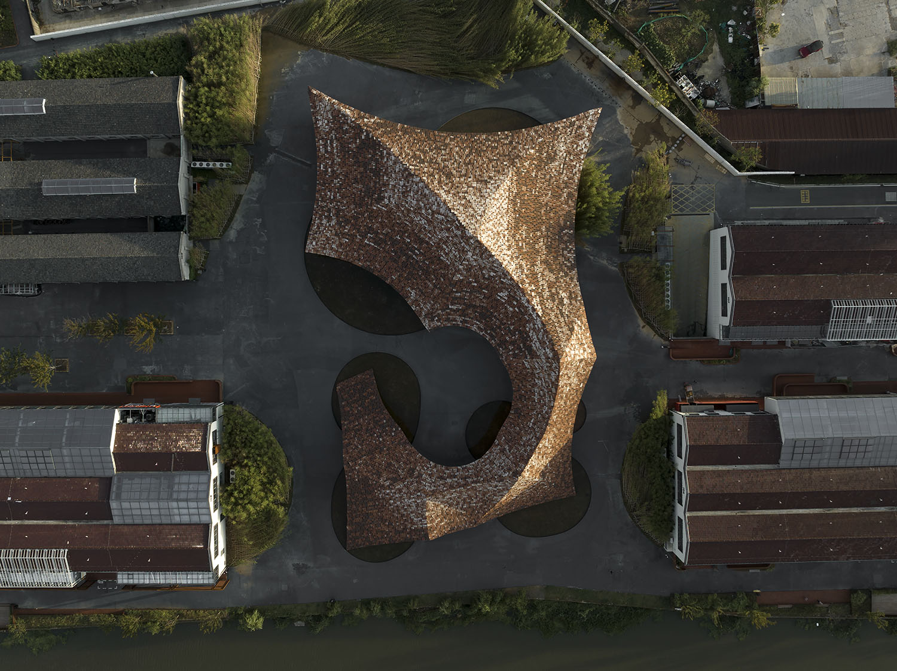
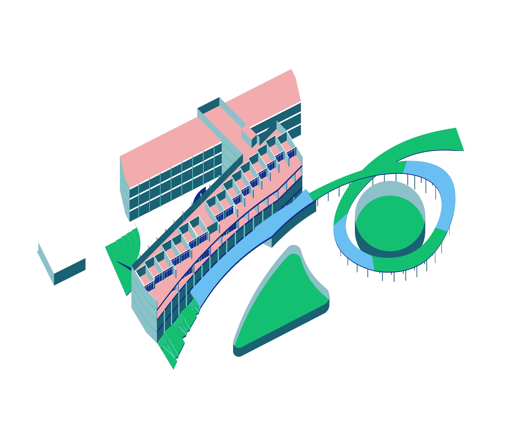
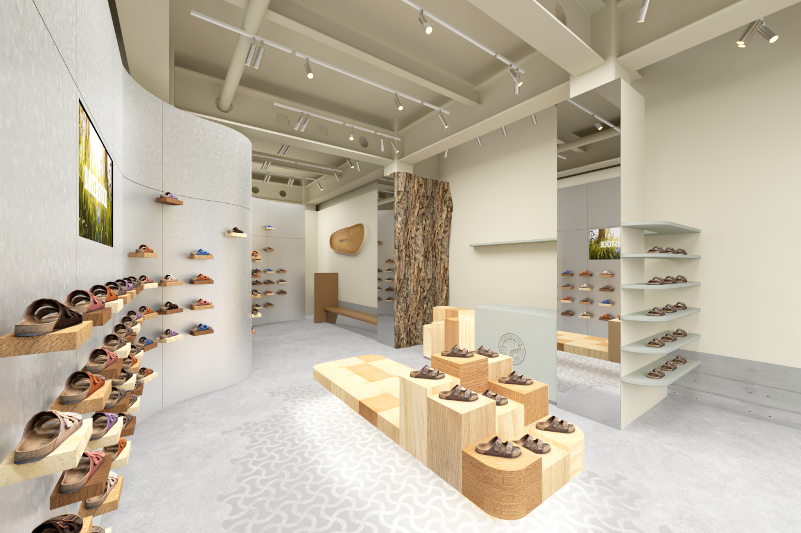
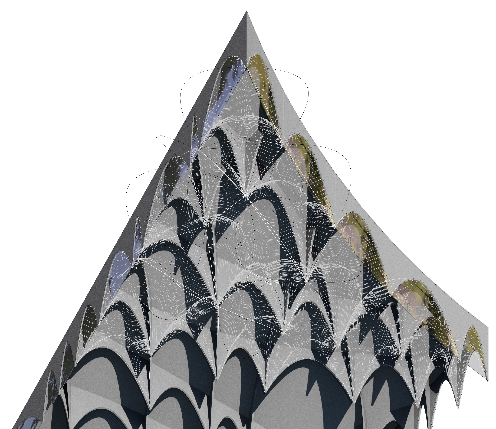
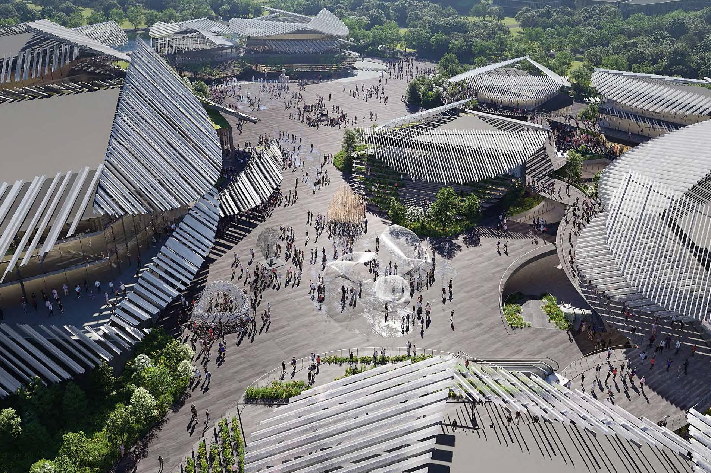
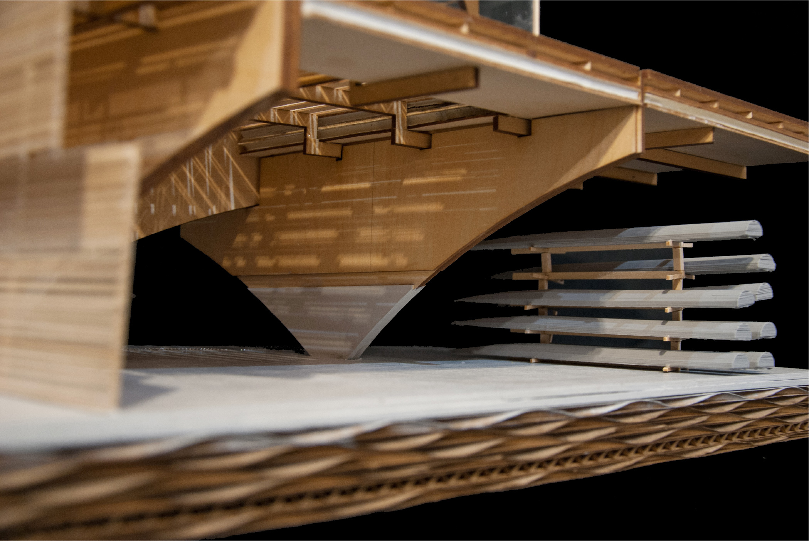

UCCA Clay Museum 2020–2024
Status: Built
Yixing, China

Closer, not further.
2025
Status: Competition
Meguro, Tokyo, Japan

If Eaves Dropped:
Rethinking Privacy NOW 2019-2020
Oomori, Tokyo, Japan

Confusion and the New Civic 2019
Shinjuku, Tokyo, Japan

Zhangyuan Museum of Art
2021–Present
Shanghai, China

Birkenstock Harajuku Concept Store
2022-2023
Harajuku, Tokyo, Japan

Porosity: Tama Art University Library Analysis2019
Hachioji, Japan

Wuxi Concert Hall and Commercial Complex2022
City, Country

Fluid yet Defined: Columbia University Baker Athletic Complex
2018
Inwood, New York, USA

—